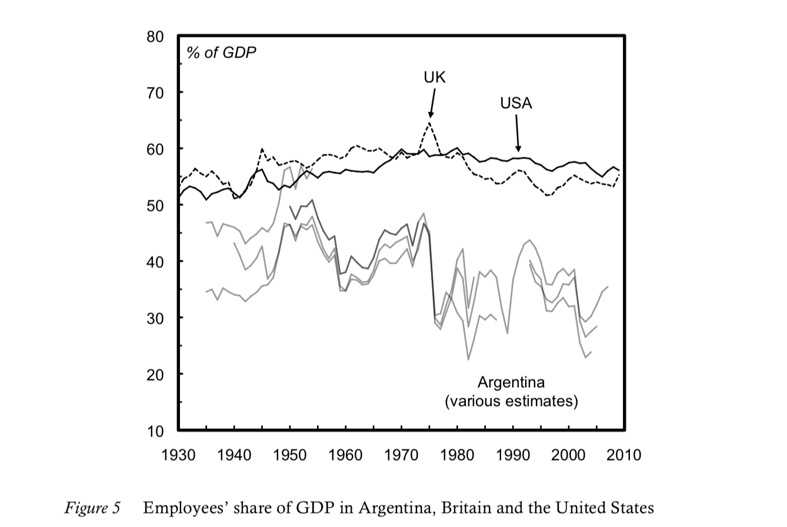
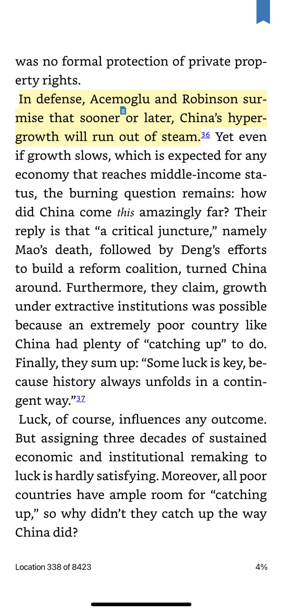
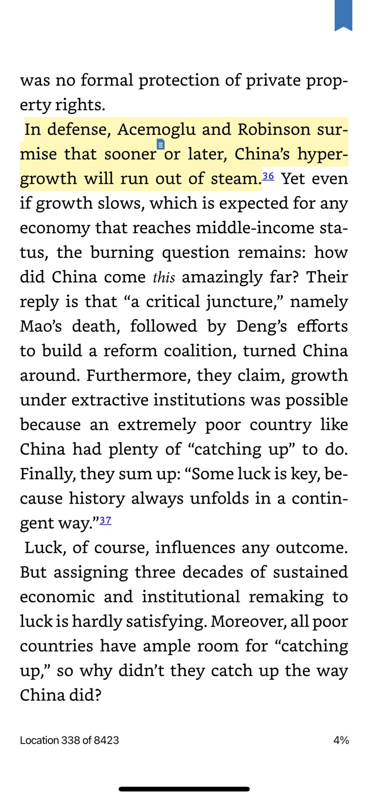
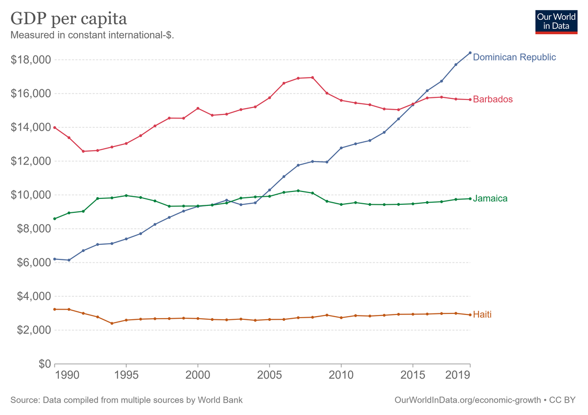
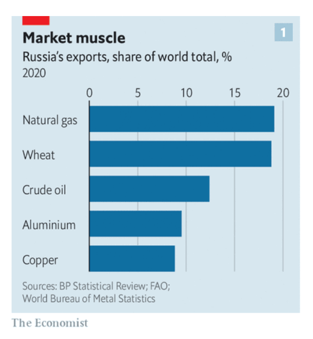

53 Countries
53.1 Argentina
Argentina traditionally has a lot of inflation, so it’s a good place to look for evidence; this is also probably why it produces so many great macroeconomists-

53.2 China
China basically destroyed every idea western intellectuals had about economic growth and development. Practically nobody admits how embarrassing this is for economists and political scientists.
 

(Yuen Yuen Ang)
I think Acemoglu’s focus on democracy and non-extractive institutions is a bit of outlier in the growth lit, which mostly would contend that China’s high levels of average human capital and physical capital investments should lead to substantial growth.
I think China actually is democratic and non-extractive at the local level, something that Acemoglu misses by focusing on national stuff. A big part of the post-Mao reforms was turning local development over to local governments and making them accountable for performance.
To be honest China since Deng Xiaoping has followed the Fredrich List- Alexander Hamilton form of political economy. They are following the same policies from Meiji Japan and Imperial Germany.
53.3 Italy
Tooze
How much growth does Italy really need? I don’t want to engage in the degrowth debate here. But Italy is also interesting from that aspect. By most reasonable criteria, despite this stagnation in gdp per capita, the standard of living in Italy for a large majority of the population is very attractive, enviable indeed. Behind a rawlsian veil of ignorance, would you pick a “success story” like the United States over Italy?
There are very real deficits of an institutional kind, in technical modernization, not to mention the future problems of the climate, energy transition etc. What Italy needs is not brute-force growth at any price, but faster, “smart” growth, reform of institutions to improve everyday life, above all in the legal system and state administration, and a major investment in its education system, which currently fails far too many young Italians.
53.4 Jamaica
Smith
Jamaica is classified as a middle-income country by the World Bank. In terms of GDP per capita (PPP), it’s at about $10,000, putting it somewhere in the same neighborhood as Vietnam, Tunisia, or Jordan. That’s rich enough for Jamaicans not to starve, and for most to have generally decent living situations, but not enough to eliminate extreme poverty or create the kind of broad middle class we’d recognize as such in a developed country.

Jamaica’s socialist policies in the early 70s — nationalization of industry, import barriers, subsidies for basic goods, high deficits, and so on — did long-term damage, while Barbados’ relatively neoliberal policies avoided hurting its economy much during those troubled years.
This, if true, would be a pretty direct rebuke to the ideas of people like Ha-Joon Chang, who argue that nationalization, import barriers, and tolerance of rapid inflation are a more effective growth strategy than the traditional “neoliberal” orthodoxy of privatization, free trade, sound money, and balanced budgets. And interestingly, Jamaica’s more leftist turn in the 70s didn’t result in enduringly lower inequality than Barbados — the two countries’ Gini coefficients are almost equal, both in the mid-40s.
The more important question here has to be why Jamaica hasn’t seen a takeoff in growth, the way the Dominican Republic. has. Remember, a growth takeoff — rather than simply stagnation at a higher level — is the ultimately goal of “development state” policies like those recommended by Ha-Joon Chang.
It might be that each country just has to wait its turn in line, waiting for the so-called “flying geese” of global capital to decide that this is the next place to produce shoes and clothes and toys. Under this theory, countries can at best hope to cut in line by having slightly better education and infrastructure than the next country over.
But if we assume there is something countries can do to jump-start industrialization, then the best candidate for what they can do is the “development state”. My favorite formulation of this is in the book How Asia Works, which — though it doesn’t get everything quite right — is the simplest and most reasonable guide to the basic idea. The author, Joe Studwell, distills the experiences of successful East Asian industrializers into three basic steps:
Land reform, to employ the rural population and raise farm output while freeing up landlords to start manufacturing companies
“Export discipline”, meaning a country promotes exports in manufacturing industries as a tool to absorb foreign technologies, learn how to climb the value chain, and generate foreign exchange
Financial repression, meaning that the finance sector is forced to fund manufacturing and exports rather than putting all its money in stuff like real estate or Bitcoin or whatever.
On land reform, Jamaica fails badly; concentrated land ownership and widespread tenant farming is a big reason for its continued high inequality. The Jamaican Left keeps proposing land reform, and it keeps not getting done. This is probably depriving Jamaican manufacturing of talent; a number of the country’s richest and most well-educated people are engaged in relatively unproductive landlording instead of starting the next Hyundai or Samsung.
How about export discipline? Here, Jamaica faces a more formidable enemy than political gridlock — its own abundance of natural resources. Jamaica has huge reserves of bauxite, which is used to make aluminum. This accounts for an enormous percentage of its exports.
Exporting aluminum-related minerals makes Jamaica’s currency more expensive (since it means other countries have to buy a lot of Jamaican dollars in order to buy the minerals). That makes Jamaican exports less competitive. This is known as “Dutch disease”.
The second problem posed by resource abundance is high wages. Yes, we all think high wages are good, but if you’re trying to get in on the cutthroat game of global manufacturing exports, you need to start at the bottom, with simple low-value activities like making clothes and toys and light electronics assembly. This is how Bangladesh and Vietnam — and, indeed, the Dominican Republic — kicked off their own exponential growth. But with a per capita GDP of around $10,000 in 1990, Jamaica was much richer than Vietnam or Bangladesh or the D.R. In fact, it’s still richer than the first two.
Because it had so much bauxite (and, possibly, so much tourism), Jamaican wages were necessarily uncompetitive when they needed to be competitive.
In fact, Jamaica did make a big push for export-oriented industrialization, starting with exactly the kinds of labor-intensive light manufacturing industries that have worked well for the successful industrializers. Established in the 1970s and 1980s, the Jamaican Free Zones were similar to China’s Special Economic Zones — they provided tax exemptions for businesses, facilitated foreign investment, and favored export-oriented industries like textiles.
But the Free Zones never took off. Even with all the tax breaks, Jamaican manufacturing was just never competitive. In an economy that’s used to middle-income living standards, the low wages and brutal conditions necessary to be competitive in labor-intensive manufacturing just didn’t provide people with what they considered to be decent work.
Whereas Bangladeshi and Vietnamese workers would endure harsh conditions for a while but eventually get better lives as companies learned how to do more complex manufacturing, Jamaica’s high starting wages short-circuited that process. If industrialization is a process of learning to walk before you learn to run, then according to this theory, Jamaica was born with a fancy aluminum wheelchair.
This might be the brutal, unfortunate truth for developing countries — those that are endowed with plentiful natural resources might simply be destined to start out ahead but eventually fall behind.
The fact is, we don’t really know how economic development happens, and to put too much faith in the Chang/Studwell story would be unwise. After all, the Dominican Republic is pulling off a successful manufacturing-based industrialization, and yet its top export is still gold. So having resource endowments doesn’t ensure stagnation; Jamaica still has a chance.
With the rise of highly complex service industries, there’s always the chance that Jamaica may in some sense be able to “leapfrog” to higher-value activities. Jamaica is trying to do this with the Jamaica Logistics Hub, which envisions the island becoming a waystation for trade throughout the Caribbean and Latin America. This can be a good strategy for a small country — is has worked well for countries like Dubai and Singapore, each of which is actually more populous than Jamaica.
Becoming a logistics hub will involve a lot of new infrastructure — in fact, China is helping Jamaica build out its facilities. Ports, roads, and various processing facilities are all being built. According to some sources, the country is now investing about a quarter of its GDP, almost as good as Vietnam, up from about a fifth of GDP five years ago.
Jamaica has avoided becoming a kleptocratic basket case like many resource exporters. Jamaica is doing OK, but it deserves to be a rich country. It just has to keep experimenting until it finds a model that will get it there.
Smith (2021) Jamaica is doing OK Could it do better than OK?

53.6 Russia

53.7 Turkey
Tooze
Since the early 2000s Turkey has relied heavily on foreign borrowing (mainly by the private sector) to finance large current account deficits brought on by rapid growth. Erdogan had ridden a wave of capital inflows that were attracted to Turkey by slightly higher interest rate margins.

Figure: Systematically promote growth through construction rather than manufacturing, agriculture and exports.
Turkey’s economic experiment ran much longer than it should have, thanks to the more elastic supply of finance. The economic costs will be larger as a result.
Erdogan has long cultivated an economic ideology that consists of a brew of convenient fragments of Muslim doctrine, productivism, hostility towards outside pressure. He is prone to associating any critics with external threats.
Warring with Turkey’s secular business interests is now a key device through which Erdogan rallies his electoral troops.
He is egged on by advisors such as Cemil Ertem who systematically promotes the idea of politico-economic autonomy.
The main message given by Ertem’s presentation is economic independence. Over and over, he emphasises that it is impossible to be economically independent while carrying out a financial policy based on high interest rates or International Monetary Fund recommendations. Ertem asserts that a policy of high interest rates has triggered a vicious circle of low exports, lower employment, high imports, growing external debt and a country with an external dependence, which again requires higher interest rates, completing a full circle. “As a result, the country is posting a high current account deficit and depending on short-term hot money inflows and raising the external debt,” he says in the presentation. “This economic model, due to its external dependency, is laying [the] ground for economic attacks.” The chief economic adviser says his new model, based on lower interest rates, will increase exports and decrease imports, leading to a current account surplus and higher growth with high employment. He believes it will make Turkish exports more competitive with a depreciated lira. “We will incentivise foreign direct investments instead of short-term hot money inflows, and stabilise the foreign finances,” Ertem says. “And that’s how we will become a stronger country that is protected from the external financial shocks.”
Certainly the devaluations of recent years have had an effect. “exports jumped 33 percent in November, reaching $21.5bn, while the current account posted a $3.16bn surplus for October. Unemployment has also decreased, by about two percentage points, from 13.1 percent to 11.2 percent in October year-on-year. GDP grew by seven percent in the third quarter of 2021.”
With import prices soaring, the economic circumstances threaten to crush domestic demand; a recent 50 per cent rise in the minimum wage will wipe out the cost advantages of the currency depreciation.
For devaluation to yield dramatic benefits would require an industrial policy to back it up.
In recent months, as Erdogan launched another easing cycle, he has reportedly cited China’s economic transformation in the wake of 1978 reforms as evidence that his model would bear fruit.
It is economically crazy to think that a country can build an export-oriented economy simply on the back of a trashed currency.If that were the case, Zimbabwe would be a tech superpower.
Some businesses are gaining from the slide in the currency. Most of the companies listed on the Borsa Istanbul are benefiting from the weak lira - publicly listed airlines, defence groups, carmakers and chemicals producers as companies that enjoy foreign currency-denominated revenues and Turkish lira-denominated staffing costs. Erdogan is prioritising exporters over households.
Turk Dolar: The new tool, labelled the “Turkish dollar” by some on social media, offers a solution to this problem: if investors convert their foreign currencies into lira and deposit them in a savings account with a certain term of maturity, Turkey’s treasury guarantees that it will get the same return as forex markets. And if the forex markets drop below the official interest rates, the investor will still get an official interest rate return.
Tooze (2021) Turkey’s financial crisis
Özgür Orhangazi,A. Erinç Yeldan in Development and Change (2021)
Noah Smith
But there were always three flies in the ointment of Turkey’s long boom. The first was a reliance on external borrowing. The second was political instability, ultimately leading to bad macroeconomic policy. And the third was Erdogan’s bizarre love of low interest rates. The root of the problem was external borrowing. Turkey’s fairly high investment rate isn’t matched by an equally high savings rate, meaning that it has had to run a big current account deficit
While some of this investment was in the aforementioned productivity-boosting manufacturing industries, a fair amount went into real estate (encouraged by the Erdogan administration) and into grandiose construction projects undertaken by the government. Since many of these projects were undertaken or encouraged for populist political reasons, they didn’t earn a great return on investment and ultimately set the country up for a rapid reversal of capital inflows. The second factor making things worse was that a ton of Turkey’s external debt was short-term, leaving it even more vulnerable to a sudden stop in foreign investment. Let’s ask why Erdogan was so eager to encourage foreign investment into sectors that weren’t going to boost long-term productivity and set the country up for a crisis. The fairly obvious answer is political instability.
When populist leaders face challenges to their rule, a very common response is to pump up short-term economic growth in order to shore up political support, even at the expense of long-term productivity growth.
Erdogan needs to use his near-dictatorial power to channel investment away from speculative real estate or white elephant construction projects, and back toward manufacturing industries.
53.8 Ukraine
Alex Smith
About half of all wheat consumed in Lebanon in 2020 came from Ukraine, according to data from the Food and Agriculture Organization (FAO). Relying on bread and other grain products for 35 percent of the population’s caloric intake, Lebanon is critically dependent on Ukrainian wheat. Of the 14 countries that rely on Ukrainian imports for more than 10 percent of their wheat consumption, a significant number already face food insecurity from ongoing political instability or outright violence. For example, Yemen and Libya import 22 percent and 43 percent, respectively, of their total wheat consumption from Ukraine. Egypt, the largest consumer of Ukrainian wheat, imported more than 3 million metric tons in 2020—about 14 percent of its total wheat. Ukraine also supplied 28 percent of Malaysian, 28 percent of Indonesian, and 21 percent of Bangladeshi wheat consumption in 2020, according to FAO data.
Smith (2022) A Russia-Ukraine War Could Ripple Across Africa and Asia